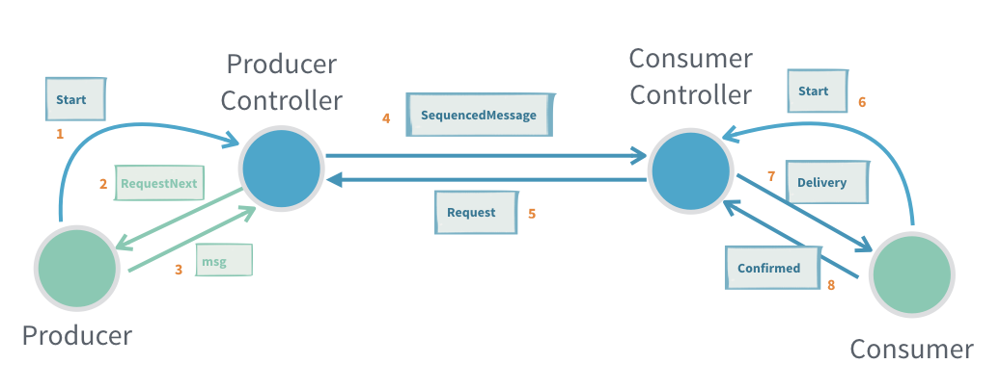

Reliable delivery
You are viewing the documentation for the new actor APIs, to view the Akka Classic documentation, see Classic At-Least-Once Delivery.
This module is currently marked as may change because it is a new feature that needs feedback from real usage before finalizing the API. This means that API or semantics can change without warning or deprecation period. It is also not recommended to use this module in production just yet.
Module info
The Akka dependencies are available from Akka’s library repository. To access them there, you need to configure the URL for this repository.
- sbt
resolvers += "Akka library repository".at("https://repo.akka.io/maven")- Maven
<project> ... <repositories> <repository> <id>akka-repository</id> <name>Akka library repository</name> <url>https://repo.akka.io/maven</url> </repository> </repositories> </project>- Gradle
repositories { mavenCentral() maven { url "https://repo.akka.io/maven" } }
To use reliable delivery, add the module to your project:
- sbt
val AkkaVersion = "2.8.3" libraryDependencies += "com.typesafe.akka" %% "akka-actor-typed" % AkkaVersion- Maven
<properties> <scala.binary.version>2.13</scala.binary.version> </properties> <dependencyManagement> <dependencies> <dependency> <groupId>com.typesafe.akka</groupId> <artifactId>akka-bom_${scala.binary.version}</artifactId> <version>2.8.3</version> <type>pom</type> <scope>import</scope> </dependency> </dependencies> </dependencyManagement> <dependencies> <dependency> <groupId>com.typesafe.akka</groupId> <artifactId>akka-actor-typed_${scala.binary.version}</artifactId> </dependency> </dependencies>- Gradle
def versions = [ ScalaBinary: "2.13" ] dependencies { implementation platform("com.typesafe.akka:akka-bom_${versions.ScalaBinary}:2.8.3") implementation "com.typesafe.akka:akka-actor-typed_${versions.ScalaBinary}" }
Introduction
Normal message delivery reliability is at-most-once delivery, which means that messages may be lost. That should be rare, but still possible.
For interactions between some actors, that is not acceptable and at-least-once delivery or effectively-once processing is needed. The tools for reliable delivery described here help with implementing that. It can’t be achieved automatically under the hood without collaboration from the application. This is because confirming when a message has been fully processed is a business level concern. Only ensuring that it was transferred over the network or delivered to the mailbox of the actor would not be enough, since the actor may crash right before being able to process the message.
Lost messages are detected, resent and deduplicated as needed. In addition, it also includes flow control for the sending of messages to avoid that a fast producer overwhelms a slower consumer or sends messages at a higher rate than what can be transferred over the network. This can be a common problem in interactions between actors, resulting in fatal errors like OutOfMemoryError because too many messages are queued in the mailboxes of the actors. The detection of lost messages and the flow control is driven by the consumer side, which means that the producer side will not send faster than the demand requested by the consumer side. The producer side will not push resends unless requested by the consumer side.
There are 3 supported patterns, which are described in the following sections:
The Point-to-Point pattern has support for automatically splitting up large messages and assemble them again on the consumer side. This feature is useful for avoiding head of line blocking from serialization and transfer of large messages.
Point-to-point
This pattern implements point-to-point reliable delivery between a single producer actor sending messages and a single consumer actor receiving the messages.
Messages are sent from the producer to ProducerControllerProducerController and via ConsumerControllerConsumerController actors, which handle the delivery and confirmation of the processing in the destination consumer actor.

The producer actor will start the flow by sending a ProducerController.Start message to the ProducerController.
The ProducerController sends RequestNext to the producer, which is then allowed to send one message to the ProducerController. Thereafter the producer will receive a new RequestNext when it’s allowed to send one more message.
The producer and ProducerController actors are required to be local so that message delivery is both fast and guaranteed. This requirement is enforced by a runtime check.
Similarly, on the consumer side the destination consumer actor will start the flow by sending an initial ConsumerController.Start message to the ConsumerController.
For the ProducerController to know where to send the messages, it must be connected with the ConsumerController. This can be done with the ProducerController.RegisterConsumer or ConsumerController.RegisterToProducerController messages. When using the point-to-point pattern, it is the application’s responsibility to connect them together. For example, this can be done by sending the ActorRef in an ordinary message to the other side, or by registering the ActorRef in the Receptionist so it can be found on the other side.
You must also take measures to reconnect them if any of the sides crashes, for example by watching it for termination.
Messages sent by the producer are wrapped in ConsumerController.Delivery when received by a consumer and the consumer should reply with ConsumerController.Confirmed when it has processed the message.
The next message is not delivered until the previous one is confirmed. Any messages from the producer that arrive while waiting for the confirmation are stashed by the ConsumerController and delivered when the previous message is confirmed.
Similar to the producer side, the consumer and the ConsumerController actors are required to be local so that message delivery is both fast and guaranteed. This requirement is enforced by a runtime check.
Many unconfirmed messages can be in flight between the ProducerController and ConsumerController, but their number is limited by a flow control window. The flow control is driven by the consumer side, which means that the ProducerController will not send faster than the demand requested by the ConsumerController.
Point-to-point example
An example of a fibonacci number generator (producer):
- Scala
-
source
import akka.actor.typed.ActorRef import akka.actor.typed.Behavior import akka.actor.typed.delivery.ProducerController import akka.actor.typed.scaladsl.Behaviors object FibonacciProducer { sealed trait Command private case class WrappedRequestNext(r: ProducerController.RequestNext[FibonacciConsumer.Command]) extends Command def apply( producerController: ActorRef[ProducerController.Command[FibonacciConsumer.Command]]): Behavior[Command] = { Behaviors.setup { context => val requestNextAdapter = context.messageAdapter[ProducerController.RequestNext[FibonacciConsumer.Command]](WrappedRequestNext(_)) producerController ! ProducerController.Start(requestNextAdapter) fibonacci(0, 1, 0) } } private def fibonacci(n: Long, b: BigInt, a: BigInt): Behavior[Command] = { Behaviors.receive { case (context, WrappedRequestNext(next)) => context.log.info("Generated fibonacci {}: {}", n, a) next.sendNextTo ! FibonacciConsumer.FibonacciNumber(n, a) if (n == 1000) Behaviors.stopped else fibonacci(n + 1, a + b, b) } } } - Java
-
source
import akka.actor.typed.ActorRef; import akka.actor.typed.Behavior; import akka.actor.typed.delivery.ProducerController; import akka.actor.typed.javadsl.AbstractBehavior; import akka.actor.typed.javadsl.ActorContext; import akka.actor.typed.javadsl.Behaviors; import akka.actor.typed.javadsl.Receive; import java.math.BigInteger; import java.util.Optional; public class FibonacciProducer extends AbstractBehavior<FibonacciProducer.Command> { private long n = 0; private BigInteger b = BigInteger.ONE; private BigInteger a = BigInteger.ZERO; interface Command {} private static class WrappedRequestNext implements Command { final ProducerController.RequestNext<FibonacciConsumer.Command> next; private WrappedRequestNext(ProducerController.RequestNext<FibonacciConsumer.Command> next) { this.next = next; } } private FibonacciProducer(ActorContext<Command> context) { super(context); } public static Behavior<Command> create( ActorRef<ProducerController.Command<FibonacciConsumer.Command>> producerController) { return Behaviors.setup( context -> { ActorRef<ProducerController.RequestNext<FibonacciConsumer.Command>> requestNextAdapter = context.messageAdapter( ProducerController.requestNextClass(), WrappedRequestNext::new); producerController.tell(new ProducerController.Start<>(requestNextAdapter)); return new FibonacciProducer(context); }); } @Override public Receive<Command> createReceive() { return newReceiveBuilder() .onMessage(WrappedRequestNext.class, w -> onWrappedRequestNext(w)) .build(); } private Behavior<Command> onWrappedRequestNext(WrappedRequestNext w) { getContext().getLog().info("Generated fibonacci {}: {}", n, a); w.next.sendNextTo().tell(new FibonacciConsumer.FibonacciNumber(n, a)); if (n == 1000) { return Behaviors.stopped(); } else { n = n + 1; b = a.add(b); a = b; return this; } } }
and consumer of the fibonacci numbers:
- Scala
-
source
import akka.actor.typed.delivery.ConsumerController object FibonacciConsumer { sealed trait Command final case class FibonacciNumber(n: Long, value: BigInt) extends Command private case class WrappedDelivery(d: ConsumerController.Delivery[Command]) extends Command def apply( consumerController: ActorRef[ConsumerController.Command[FibonacciConsumer.Command]]): Behavior[Command] = { Behaviors.setup { context => val deliveryAdapter = context.messageAdapter[ConsumerController.Delivery[FibonacciConsumer.Command]](WrappedDelivery(_)) consumerController ! ConsumerController.Start(deliveryAdapter) Behaviors.receiveMessagePartial { case WrappedDelivery(ConsumerController.Delivery(FibonacciNumber(n, value), confirmTo)) => context.log.info("Processed fibonacci {}: {}", n, value) confirmTo ! ConsumerController.Confirmed Behaviors.same } } } } - Java
-
source
import akka.actor.typed.delivery.ConsumerController; public class FibonacciConsumer extends AbstractBehavior<FibonacciConsumer.Command> { interface Command {} public static class FibonacciNumber implements Command { public final long n; public final BigInteger value; public FibonacciNumber(long n, BigInteger value) { this.n = n; this.value = value; } } private static class WrappedDelivery implements Command { final ConsumerController.Delivery<Command> delivery; private WrappedDelivery(ConsumerController.Delivery<Command> delivery) { this.delivery = delivery; } } public static Behavior<Command> create( ActorRef<ConsumerController.Command<FibonacciConsumer.Command>> consumerController) { return Behaviors.setup( context -> { ActorRef<ConsumerController.Delivery<FibonacciConsumer.Command>> deliveryAdapter = context.messageAdapter(ConsumerController.deliveryClass(), WrappedDelivery::new); consumerController.tell(new ConsumerController.Start<>(deliveryAdapter)); return new FibonacciConsumer(context); }); } private FibonacciConsumer(ActorContext<Command> context) { super(context); } @Override public Receive<Command> createReceive() { return newReceiveBuilder().onMessage(WrappedDelivery.class, this::onDelivery).build(); } private Behavior<Command> onDelivery(WrappedDelivery w) { FibonacciNumber number = (FibonacciNumber) w.delivery.message(); getContext().getLog().info("Processed fibonacci {}: {}", number.n, number.value); w.delivery.confirmTo().tell(ConsumerController.confirmed()); return this; } }
The FibonacciProducer sends the messages to a ProducerController. The FibonacciConsumer receives the messages from a ConsumerController. Note how the ActorRef in the Start messages are constructed as message adapters to map the RequestNext and Delivery to the protocol of the producer and consumer actors respectively.
The ConsumerController and ProducerController are connected via the ConsumerController.RegisterToProducerController message. The ActorRef of the ProducerController can be shared between producer and consumer sides with ordinary messages, or by using the Receptionist. Alternatively, they can be connected in the other direction by sending ProducerController.RegisterConsumer to the ProducerController.
- Scala
-
source
val consumerController = context.spawn(ConsumerController[FibonacciConsumer.Command](), "consumerController") context.spawn(FibonacciConsumer(consumerController), "consumer") val producerId = s"fibonacci-${UUID.randomUUID()}" val producerController = context.spawn( ProducerController[FibonacciConsumer.Command](producerId, durableQueueBehavior = None), "producerController") context.spawn(FibonacciProducer(producerController), "producer") consumerController ! ConsumerController.RegisterToProducerController(producerController) - Java
-
source
ActorRef<ConsumerController.Command<FibonacciConsumer.Command>> consumerController = context.spawn(ConsumerController.create(), "consumerController"); context.spawn(FibonacciConsumer.create(consumerController), "consumer"); String producerId = "fibonacci-" + UUID.randomUUID(); ActorRef<ProducerController.Command<FibonacciConsumer.Command>> producerController = context.spawn( ProducerController.create( FibonacciConsumer.Command.class, producerId, Optional.empty()), "producerController"); context.spawn(FibonacciProducer.create(producerController), "producer"); consumerController.tell( new ConsumerController.RegisterToProducerController<>(producerController));
Point-to-point delivery semantics
As long as neither producer nor consumer crash, the messages are delivered to the consumer actor in the same order as they were sent to the ProducerController, without loss or duplicates. This means effectively-once processing without any business level deduplication.
Unconfirmed messages may be lost if the producer crashes. To avoid that, you need to enable the durable queue on the producer side. By doing so, any stored unconfirmed messages will be redelivered when the corresponding producer is started again. Even if the same ConsumerController instance is used, there may be delivery of messages that had already been processed but the fact that they were confirmed had not been stored yet. This means that we have at-least-once delivery.
If the consumer crashes, a new ConsumerController can be connected to the original ProducerConsumer without restarting it. The ProducerConsumer will then redeliver all unconfirmed messages. In that case the unconfirmed messages will be delivered to the new consumer and some of these may already have been processed by the previous consumer. Again, this means that we have at-least-once delivery.
Work pulling
Work pulling is a pattern where several worker actors pull tasks at their own pace from a shared work manager instead of that the manager pushes work to the workers blindly without knowing their individual capacity and current availability.
One important property is that the order of the messages should not matter, because each message is routed randomly to one of the workers with demand. In other words, two subsequent messages may be routed to two different workers and processed independent of each other.
Messages are sent from the producer to WorkPullingProducerControllerWorkPullingProducerController and via ConsumerControllerConsumerController actors, which handle the delivery and confirmation of the processing in the destination worker (consumer) actor.

and adding another worker

A worker actor (consumer) and its ConsumerController is dynamically registered to the WorkPullingProducerController via a ServiceKey. It will register itself to the Receptionist, and the WorkPullingProducerController subscribes to the same key to find active workers. In this way workers can be dynamically added or removed from any node in the cluster.
The work manager (producer) actor will start the flow by sending a WorkPullingProducerController.Start message to the WorkPullingProducerController.
The WorkPullingProducerController sends RequestNext to the producer, which is then allowed to send one message to the WorkPullingProducerController. Thereafter the producer will receive a new RequestNext when it’s allowed to send one more message. WorkPullingProducerController will send a new RequestNext when there is a demand from any worker. It’s possible that all workers with demand are deregistered after the RequestNext is sent and before the actual messages is sent to the WorkPullingProducerController. In that case the message is buffered and will be delivered when a new worker is registered or when there is a new demand.
The producer and WorkPullingProducerController actors are supposed to be local so that these messages are fast and not lost. This is enforced by a runtime check.
Similarly, on the consumer side the destination consumer actor will start the flow by sending an initial ConsumerController.Start message to the ConsumerController.
Received messages from the producer are wrapped in ConsumerController.Delivery when sent to the consumer, which is supposed to reply with ConsumerController.Confirmed when it has processed the message. Next message is not delivered until the previous is confirmed. More messages from the producer that arrive while waiting for the confirmation are stashed by the ConsumerController and delivered when the previous message is confirmed.
The consumer and the ConsumerController actors are supposed to be local so that these messages are fast and not lost. This is enforced by a runtime check.
Many unconfirmed messages can be in flight between the WorkPullingProducerController and each ConsumerController, but it is limited by a flow control window. The flow control is driven by the consumer side, which means that the WorkPullingProducerController will not send faster than the demand requested by the workers.
Work pulling example
Example of image converter worker (consumer):
- Scala
-
source
import akka.actor.typed.scaladsl.Behaviors import akka.actor.typed.Behavior import akka.actor.typed.delivery.ConsumerController import akka.actor.typed.receptionist.ServiceKey object ImageConverter { sealed trait Command final case class ConversionJob(resultId: UUID, fromFormat: String, toFormat: String, image: Array[Byte]) private case class WrappedDelivery(d: ConsumerController.Delivery[ConversionJob]) extends Command val serviceKey = ServiceKey[ConsumerController.Command[ConversionJob]]("ImageConverter") def apply(): Behavior[Command] = { Behaviors.setup { context => val deliveryAdapter = context.messageAdapter[ConsumerController.Delivery[ConversionJob]](WrappedDelivery(_)) val consumerController = context.spawn(ConsumerController(serviceKey), "consumerController") consumerController ! ConsumerController.Start(deliveryAdapter) Behaviors.receiveMessage { case WrappedDelivery(delivery) => val image = delivery.message.image val fromFormat = delivery.message.fromFormat val toFormat = delivery.message.toFormat // convert image... // store result with resultId key for later retrieval // and when completed confirm delivery.confirmTo ! ConsumerController.Confirmed Behaviors.same } } } } - Java
-
source
import akka.actor.typed.ActorRef; import akka.actor.typed.Behavior; import akka.actor.typed.delivery.ConsumerController; import akka.actor.typed.delivery.DurableProducerQueue; import akka.actor.typed.javadsl.ActorContext; import akka.actor.typed.javadsl.Behaviors; import java.time.Duration; import java.util.Optional; import java.util.UUID; public class ImageConverter { interface Command {} public static class ConversionJob { public final UUID resultId; public final String fromFormat; public final String toFormat; public final byte[] image; public ConversionJob(UUID resultId, String fromFormat, String toFormat, byte[] image) { this.resultId = resultId; this.fromFormat = fromFormat; this.toFormat = toFormat; this.image = image; } } private static class WrappedDelivery implements Command { final ConsumerController.Delivery<ConversionJob> delivery; private WrappedDelivery(ConsumerController.Delivery<ConversionJob> delivery) { this.delivery = delivery; } } public static ServiceKey<ConsumerController.Command<ConversionJob>> serviceKey = ServiceKey.create(ConsumerController.serviceKeyClass(), "ImageConverter"); public static Behavior<Command> create() { return Behaviors.setup( context -> { ActorRef<ConsumerController.Delivery<ConversionJob>> deliveryAdapter = context.messageAdapter(ConsumerController.deliveryClass(), WrappedDelivery::new); ActorRef<ConsumerController.Command<ConversionJob>> consumerController = context.spawn(ConsumerController.create(serviceKey), "consumerController"); consumerController.tell(new ConsumerController.Start<>(deliveryAdapter)); return Behaviors.receive(Command.class) .onMessage(WrappedDelivery.class, ImageConverter::onDelivery) .build(); }); } private static Behavior<Command> onDelivery(WrappedDelivery w) { byte[] image = w.delivery.message().image; String fromFormat = w.delivery.message().fromFormat; String toFormat = w.delivery.message().toFormat; // convert image... // store result with resultId key for later retrieval // and when completed confirm w.delivery.confirmTo().tell(ConsumerController.confirmed()); return Behaviors.same(); } }
and image converter job manager (producer):
- Scala
-
source
import akka.actor.typed.delivery.WorkPullingProducerController import akka.actor.typed.scaladsl.ActorContext import akka.actor.typed.scaladsl.StashBuffer object ImageWorkManager { sealed trait Command final case class Convert(fromFormat: String, toFormat: String, image: Array[Byte]) extends Command private case class WrappedRequestNext(r: WorkPullingProducerController.RequestNext[ImageConverter.ConversionJob]) extends Command final case class GetResult(resultId: UUID, replyTo: ActorRef[Option[Array[Byte]]]) extends Command def apply(): Behavior[Command] = { Behaviors.setup { context => val requestNextAdapter = context.messageAdapter[WorkPullingProducerController.RequestNext[ImageConverter.ConversionJob]]( WrappedRequestNext(_)) val producerController = context.spawn( WorkPullingProducerController( producerId = "workManager", workerServiceKey = ImageConverter.serviceKey, durableQueueBehavior = None), "producerController") producerController ! WorkPullingProducerController.Start(requestNextAdapter) Behaviors.withStash(1000) { stashBuffer => new ImageWorkManager(context, stashBuffer).waitForNext() } } } } final class ImageWorkManager( context: ActorContext[ImageWorkManager.Command], stashBuffer: StashBuffer[ImageWorkManager.Command]) { import ImageWorkManager._ private def waitForNext(): Behavior[Command] = { Behaviors.receiveMessagePartial { case WrappedRequestNext(next) => stashBuffer.unstashAll(active(next)) case c: Convert => if (stashBuffer.isFull) { context.log.warn("Too many Convert requests.") Behaviors.same } else { stashBuffer.stash(c) Behaviors.same } case GetResult(resultId, replyTo) => // TODO retrieve the stored result and reply Behaviors.same } } private def active( next: WorkPullingProducerController.RequestNext[ImageConverter.ConversionJob]): Behavior[Command] = { Behaviors.receiveMessagePartial { case Convert(from, to, image) => val resultId = UUID.randomUUID() next.sendNextTo ! ImageConverter.ConversionJob(resultId, from, to, image) waitForNext() case GetResult(resultId, replyTo) => // TODO retrieve the stored result and reply Behaviors.same case _: WrappedRequestNext => throw new IllegalStateException("Unexpected RequestNext") } } } - Java
-
source
import akka.actor.typed.delivery.WorkPullingProducerController; import akka.Done; public class ImageWorkManager { interface Command {} public static class Convert implements Command { public final String fromFormat; public final String toFormat; public final byte[] image; public Convert(String fromFormat, String toFormat, byte[] image) { this.fromFormat = fromFormat; this.toFormat = toFormat; this.image = image; } } public static class GetResult implements Command { public final UUID resultId; public final ActorRef<Optional<byte[]>> replyTo; public GetResult(UUID resultId, ActorRef<Optional<byte[]>> replyTo) { this.resultId = resultId; this.replyTo = replyTo; } } private static class WrappedRequestNext implements Command { final WorkPullingProducerController.RequestNext<ImageConverter.ConversionJob> next; private WrappedRequestNext( WorkPullingProducerController.RequestNext<ImageConverter.ConversionJob> next) { this.next = next; } } private final ActorContext<Command> context; private final StashBuffer<Command> stashBuffer; private ImageWorkManager(ActorContext<Command> context, StashBuffer<Command> stashBuffer) { this.context = context; this.stashBuffer = stashBuffer; } public static Behavior<Command> create() { return Behaviors.setup( context -> { ActorRef<WorkPullingProducerController.RequestNext<ImageConverter.ConversionJob>> requestNextAdapter = context.messageAdapter( WorkPullingProducerController.requestNextClass(), WrappedRequestNext::new); ActorRef<WorkPullingProducerController.Command<ImageConverter.ConversionJob>> producerController = context.spawn( WorkPullingProducerController.create( ImageConverter.ConversionJob.class, "workManager", ImageConverter.serviceKey, Optional.empty()), "producerController"); producerController.tell(new WorkPullingProducerController.Start<>(requestNextAdapter)); return Behaviors.withStash( 1000, stashBuffer -> new ImageWorkManager(context, stashBuffer).waitForNext()); }); } private Behavior<Command> waitForNext() { return Behaviors.receive(Command.class) .onMessage(WrappedRequestNext.class, this::onWrappedRequestNext) .onMessage(Convert.class, this::onConvertWait) .onMessage(GetResult.class, this::onGetResult) .build(); } private Behavior<Command> onWrappedRequestNext(WrappedRequestNext w) { return stashBuffer.unstashAll(active(w.next)); } private Behavior<Command> onConvertWait(Convert convert) { if (stashBuffer.isFull()) { context.getLog().warn("Too many Convert requests."); return Behaviors.same(); } else { stashBuffer.stash(convert); return Behaviors.same(); } } private Behavior<Command> onGetResult(GetResult get) { // TODO retrieve the stored result and reply return Behaviors.same(); } private Behavior<Command> active( WorkPullingProducerController.RequestNext<ImageConverter.ConversionJob> next) { return Behaviors.receive(Command.class) .onMessage(Convert.class, c -> onConvert(c, next)) .onMessage(GetResult.class, this::onGetResult) .onMessage(WrappedRequestNext.class, this::onUnexpectedWrappedRequestNext) .build(); } private Behavior<Command> onUnexpectedWrappedRequestNext(WrappedRequestNext w) { throw new IllegalStateException("Unexpected RequestNext"); } private Behavior<Command> onConvert( Convert convert, WorkPullingProducerController.RequestNext<ImageConverter.ConversionJob> next) { UUID resultId = UUID.randomUUID(); next.sendNextTo() .tell( new ImageConverter.ConversionJob( resultId, convert.fromFormat, convert.toFormat, convert.image)); return waitForNext(); } }
Note how the ActorRef in the Start messages are constructed as message adapters to map the RequestNext and Delivery to the protocol of the producer and consumer actors respectively.
See also the corresponding example that is using ask from the producer.
Work pulling delivery semantics
For work pulling the order of the messages should not matter, because each message is routed randomly to one of the workers with demand and can therefore be processed in any order.
As long as neither producers nor workers crash (or workers being removed for other reasons) the messages are delivered to the workers without loss or duplicates. Meaning effectively-once processing without any business level deduplication.
Unconfirmed messages may be lost if the producer crashes. To avoid that you need to enable the durable queue on the producer side. The stored unconfirmed messages will be redelivered when the corresponding producer is started again. Those messages may be routed to different workers than before and some of them may have already been processed but the fact that they were confirmed had not been stored yet. Meaning at-least-once delivery.
If a worker crashes or is stopped gracefully the unconfirmed messages will be redelivered to other workers. In that case some of these may already have been processed by the previous worker. Meaning at-least-once delivery.
Sharding
To use reliable delivery with Cluster Sharding, add the following module to your project:
- sbt
val AkkaVersion = "2.8.3" libraryDependencies += "com.typesafe.akka" %% "akka-cluster-sharding-typed" % AkkaVersion- Maven
<properties> <scala.binary.version>2.13</scala.binary.version> </properties> <dependencyManagement> <dependencies> <dependency> <groupId>com.typesafe.akka</groupId> <artifactId>akka-bom_${scala.binary.version}</artifactId> <version>2.8.3</version> <type>pom</type> <scope>import</scope> </dependency> </dependencies> </dependencyManagement> <dependencies> <dependency> <groupId>com.typesafe.akka</groupId> <artifactId>akka-cluster-sharding-typed_${scala.binary.version}</artifactId> </dependency> </dependencies>- Gradle
def versions = [ ScalaBinary: "2.13" ] dependencies { implementation platform("com.typesafe.akka:akka-bom_${versions.ScalaBinary}:2.8.3") implementation "com.typesafe.akka:akka-cluster-sharding-typed_${versions.ScalaBinary}" }
Reliable delivery between a producer actor sending messages to sharded consumer actor receiving the messages.

and sending to another entity

and sending from another producer (different node)

The ShardingProducerControllerShardingProducerController should be used together with ShardingConsumerControllerShardingConsumerController.
A producer can send messages via a ShardingProducerController to any ShardingConsumerController identified by an entityId. A single ShardingProducerController per ActorSystem (node) can be shared for sending to all entities of a certain entity type. No explicit registration is needed between the ShardingConsumerController and ShardingProducerController.
The producer actor will start the flow by sending a ShardingProducerController.Start message to the ShardingProducerController.
The ShardingProducerController sends RequestNext to the producer, which is then allowed to send one message to the ShardingProducerController. Thereafter the producer will receive a new RequestNext when it’s allowed to send one more message.
In the ShardingProducerController.RequestNextShardingProducerController.RequestNext message there is information about which entities that have demand. It is allowed to send to a new entityId that is not included in the RequestNext.entitiesWithDemand. If sending to an entity that doesn’t have demand the message will be buffered. This support for buffering means that it is even allowed to send several messages in response to one RequestNext but it’s recommended to only send one message and wait for next RequestNext before sending more messages.
The producer and ShardingProducerController actors are supposed to be local so that these messages are fast and not lost. This is enforced by a runtime check.
Similarly, on the consumer side the destination consumer actor will start the flow by sending an initial ConsumerController.Start message to the ConsumerController.
There will be one ShardingConsumerController for each entity. Many unconfirmed messages can be in flight between the ShardingProducerController and each ShardingConsumerController, but it is limited by a flow control window. The flow control is driven by the consumer side, which means that the ShardingProducerController will not send faster than the demand requested by the consumers.
Sharding example
The sharded entity is a todo list which uses an async database call to store its entire state on each change, and first when that completes replies to reliable delivery that the message was consumed.
Example of TodoList entity (consumer):
- Scala
-
source
import scala.concurrent.Future import scala.concurrent.duration._ import scala.util.Failure import scala.util.Success import akka.Done import akka.actor.typed.ActorRef import akka.actor.typed.Behavior import akka.actor.typed.delivery.ConsumerController import akka.actor.typed.scaladsl.ActorContext import akka.actor.typed.scaladsl.Behaviors import akka.cluster.sharding.typed.delivery.ShardingConsumerController import akka.util.Timeout trait DB { def save(id: String, value: TodoList.State): Future[Done] def load(id: String): Future[TodoList.State] } object TodoList { sealed trait Command final case class AddTask(item: String) extends Command final case class CompleteTask(item: String) extends Command private final case class InitialState(state: State) extends Command private final case class SaveSuccess(confirmTo: ActorRef[ConsumerController.Confirmed]) extends Command private final case class DBError(cause: Throwable) extends Command private final case class CommandDelivery(command: Command, confirmTo: ActorRef[ConsumerController.Confirmed]) extends Command final case class State(tasks: Vector[String]) def apply( id: String, db: DB, consumerController: ActorRef[ConsumerController.Start[Command]]): Behavior[Command] = { Behaviors.setup[Command] { context => new TodoList(context, id, db).start(consumerController) } } } class TodoList(context: ActorContext[TodoList.Command], id: String, db: DB) { import TodoList._ private def start(consumerController: ActorRef[ConsumerController.Start[Command]]): Behavior[Command] = { context.pipeToSelf(db.load(id)) { case Success(value) => InitialState(value) case Failure(cause) => DBError(cause) } Behaviors.receiveMessagePartial { case InitialState(state) => val deliveryAdapter: ActorRef[ConsumerController.Delivery[Command]] = context.messageAdapter { delivery => CommandDelivery(delivery.message, delivery.confirmTo) } consumerController ! ConsumerController.Start(deliveryAdapter) active(state) case DBError(cause) => throw cause } } private def active(state: State): Behavior[Command] = { Behaviors.receiveMessagePartial { case CommandDelivery(AddTask(item), confirmTo) => val newState = state.copy(tasks = state.tasks :+ item) save(newState, confirmTo) active(newState) case CommandDelivery(CompleteTask(item), confirmTo) => val newState = state.copy(tasks = state.tasks.filterNot(_ == item)) save(newState, confirmTo) active(newState) case SaveSuccess(confirmTo) => confirmTo ! ConsumerController.Confirmed Behaviors.same case DBError(cause) => throw cause } } private def save(newState: State, confirmTo: ActorRef[ConsumerController.Confirmed]): Unit = { context.pipeToSelf(db.save(id, newState)) { case Success(_) => SaveSuccess(confirmTo) case Failure(cause) => DBError(cause) } } } - Java
-
source
import akka.Done; import akka.actor.Address; import akka.actor.typed.ActorRef; import akka.actor.typed.Behavior; import akka.actor.typed.delivery.ConsumerController; import akka.actor.typed.javadsl.AbstractBehavior; import akka.actor.typed.javadsl.ActorContext; import akka.actor.typed.javadsl.Behaviors; import akka.actor.typed.javadsl.Receive; import java.time.Duration; import java.util.ArrayList; import java.util.Collections; import java.util.List; import java.util.Optional; import java.util.concurrent.CompletionStage; interface DB { CompletionStage<Done> save(String id, TodoList.State state); CompletionStage<TodoList.State> load(String id); } public class TodoList { interface Command {} public static class AddTask implements Command { public final String item; public AddTask(String item) { this.item = item; } } public static class CompleteTask implements Command { public final String item; public CompleteTask(String item) { this.item = item; } } private static class InitialState implements Command { final State state; private InitialState(State state) { this.state = state; } } private static class SaveSuccess implements Command { final ActorRef<ConsumerController.Confirmed> confirmTo; private SaveSuccess(ActorRef<ConsumerController.Confirmed> confirmTo) { this.confirmTo = confirmTo; } } private static class DBError implements Command { final Exception cause; private DBError(Throwable cause) { if (cause instanceof Exception) this.cause = (Exception) cause; else this.cause = new RuntimeException(cause.getMessage(), cause); } } private static class CommandDelivery implements Command { final Command command; final ActorRef<ConsumerController.Confirmed> confirmTo; private CommandDelivery(Command command, ActorRef<ConsumerController.Confirmed> confirmTo) { this.command = command; this.confirmTo = confirmTo; } } public static class State { public final List<String> tasks; public State(List<String> tasks) { this.tasks = Collections.unmodifiableList(tasks); } public State add(String task) { ArrayList<String> copy = new ArrayList<>(tasks); copy.add(task); return new State(copy); } public State remove(String task) { ArrayList<String> copy = new ArrayList<>(tasks); copy.remove(task); return new State(copy); } } public static Behavior<Command> create( String id, DB db, ActorRef<ConsumerController.Start<Command>> consumerController) { return Init.create(id, db, consumerController); } private static Behavior<Command> onDBError(DBError error) throws Exception { throw error.cause; } static class Init extends AbstractBehavior<Command> { private final String id; private final DB db; private final ActorRef<ConsumerController.Start<Command>> consumerController; private Init( ActorContext<Command> context, String id, DB db, ActorRef<ConsumerController.Start<Command>> consumerController) { super(context); this.id = id; this.db = db; this.consumerController = consumerController; } static Behavior<Command> create( String id, DB db, ActorRef<ConsumerController.Start<Command>> consumerController) { return Behaviors.setup( context -> { context.pipeToSelf( db.load(id), (state, exc) -> { if (exc == null) return new InitialState(state); else return new DBError(exc); }); return new Init(context, id, db, consumerController); }); } @Override public Receive<Command> createReceive() { return newReceiveBuilder() .onMessage(InitialState.class, this::onInitialState) .onMessage(DBError.class, TodoList::onDBError) .build(); } private Behavior<Command> onInitialState(InitialState initial) { ActorRef<ConsumerController.Delivery<Command>> deliveryAdapter = getContext() .messageAdapter( ConsumerController.deliveryClass(), d -> new CommandDelivery(d.message(), d.confirmTo())); consumerController.tell(new ConsumerController.Start<>(deliveryAdapter)); return Active.create(id, db, initial.state); } } static class Active extends AbstractBehavior<Command> { private final String id; private final DB db; private State state; private Active(ActorContext<Command> context, String id, DB db, State state) { super(context); this.id = id; this.db = db; this.state = state; } static Behavior<Command> create(String id, DB db, State state) { return Behaviors.setup(context -> new Active(context, id, db, state)); } @Override public Receive<Command> createReceive() { return newReceiveBuilder() .onMessage(CommandDelivery.class, this::onDelivery) .onMessage(SaveSuccess.class, this::onSaveSuccess) .onMessage(DBError.class, TodoList::onDBError) .build(); } private Behavior<Command> onDelivery(CommandDelivery delivery) { if (delivery.command instanceof AddTask) { AddTask addTask = (AddTask) delivery.command; state = state.add(addTask.item); save(state, delivery.confirmTo); return this; } else if (delivery.command instanceof CompleteTask) { CompleteTask completeTask = (CompleteTask) delivery.command; state = state.remove(completeTask.item); save(state, delivery.confirmTo); return this; } else { return Behaviors.unhandled(); } } private void save(State newState, ActorRef<ConsumerController.Confirmed> confirmTo) { getContext() .pipeToSelf( db.save(id, newState), (state, exc) -> { if (exc == null) return new SaveSuccess(confirmTo); else return new DBError(exc); }); } private Behavior<Command> onSaveSuccess(SaveSuccess success) { success.confirmTo.tell(ConsumerController.confirmed()); return this; } } }
and TodoService (producer):
- Scala
-
source
import akka.cluster.sharding.typed.delivery.ShardingProducerController object TodoService { sealed trait Command final case class UpdateTodo(listId: String, item: String, completed: Boolean, replyTo: ActorRef[Response]) extends Command sealed trait Response case object Accepted extends Response case object Rejected extends Response case object MaybeAccepted extends Response private final case class WrappedRequestNext(requestNext: ShardingProducerController.RequestNext[TodoList.Command]) extends Command private final case class Confirmed(originalReplyTo: ActorRef[Response]) extends Command private final case class TimedOut(originalReplyTo: ActorRef[Response]) extends Command def apply(producerController: ActorRef[ShardingProducerController.Command[TodoList.Command]]): Behavior[Command] = { Behaviors.setup { context => new TodoService(context).start(producerController) } } } class TodoService(context: ActorContext[TodoService.Command]) { import TodoService._ private implicit val askTimeout: Timeout = 5.seconds private def start( producerController: ActorRef[ShardingProducerController.Start[TodoList.Command]]): Behavior[Command] = { val requestNextAdapter: ActorRef[ShardingProducerController.RequestNext[TodoList.Command]] = context.messageAdapter(WrappedRequestNext.apply) producerController ! ShardingProducerController.Start(requestNextAdapter) Behaviors.receiveMessagePartial { case WrappedRequestNext(next) => active(next) case UpdateTodo(_, _, _, replyTo) => // not hooked up with shardingProducerController yet replyTo ! Rejected Behaviors.same } } private def active(requestNext: ShardingProducerController.RequestNext[TodoList.Command]): Behavior[Command] = { Behaviors.receiveMessage { case WrappedRequestNext(next) => active(next) case UpdateTodo(listId, item, completed, replyTo) => if (requestNext.bufferedForEntitiesWithoutDemand.getOrElse(listId, 0) >= 100) replyTo ! Rejected else { val requestMsg = if (completed) TodoList.CompleteTask(item) else TodoList.AddTask(item) context.ask[ShardingProducerController.MessageWithConfirmation[TodoList.Command], Done]( requestNext.askNextTo, askReplyTo => ShardingProducerController.MessageWithConfirmation(listId, requestMsg, askReplyTo)) { case Success(Done) => Confirmed(replyTo) case Failure(_) => TimedOut(replyTo) } } Behaviors.same case Confirmed(originalReplyTo) => originalReplyTo ! Accepted Behaviors.same case TimedOut(originalReplyTo) => originalReplyTo ! MaybeAccepted Behaviors.same } } } - Java
-
source
import akka.cluster.sharding.typed.delivery.ShardingProducerController; public class TodoService { interface Command {} public static class UpdateTodo implements Command { public final String listId; public final String item; public final boolean completed; public final ActorRef<Response> replyTo; public UpdateTodo(String listId, String item, boolean completed, ActorRef<Response> replyTo) { this.listId = listId; this.item = item; this.completed = completed; this.replyTo = replyTo; } } public enum Response { ACCEPTED, REJECTED, MAYBE_ACCEPTED } private static class Confirmed implements Command { final ActorRef<Response> originalReplyTo; private Confirmed(ActorRef<Response> originalReplyTo) { this.originalReplyTo = originalReplyTo; } } private static class TimedOut implements Command { final ActorRef<Response> originalReplyTo; private TimedOut(ActorRef<Response> originalReplyTo) { this.originalReplyTo = originalReplyTo; } } private static class WrappedRequestNext implements Command { final ShardingProducerController.RequestNext<TodoList.Command> next; private WrappedRequestNext(ShardingProducerController.RequestNext<TodoList.Command> next) { this.next = next; } } public static Behavior<Command> create( ActorRef<ShardingProducerController.Command<TodoList.Command>> producerController) { return Init.create(producerController); } static class Init extends AbstractBehavior<TodoService.Command> { static Behavior<Command> create( ActorRef<ShardingProducerController.Command<TodoList.Command>> producerController) { return Behaviors.setup( context -> { ActorRef<ShardingProducerController.RequestNext<TodoList.Command>> requestNextAdapter = context.messageAdapter( ShardingProducerController.requestNextClass(), WrappedRequestNext::new); producerController.tell(new ShardingProducerController.Start<>(requestNextAdapter)); return new Init(context); }); } private Init(ActorContext<Command> context) { super(context); } @Override public Receive<Command> createReceive() { return newReceiveBuilder() .onMessage(WrappedRequestNext.class, w -> Active.create(w.next)) .onMessage( UpdateTodo.class, command -> { // not hooked up with shardingProducerController yet command.replyTo.tell(Response.REJECTED); return this; }) .build(); } } static class Active extends AbstractBehavior<TodoService.Command> { private ShardingProducerController.RequestNext<TodoList.Command> requestNext; static Behavior<Command> create( ShardingProducerController.RequestNext<TodoList.Command> requestNext) { return Behaviors.setup(context -> new Active(context, requestNext)); } private Active( ActorContext<Command> context, ShardingProducerController.RequestNext<TodoList.Command> requestNext) { super(context); this.requestNext = requestNext; } @Override public Receive<Command> createReceive() { return newReceiveBuilder() .onMessage(WrappedRequestNext.class, this::onRequestNext) .onMessage(UpdateTodo.class, this::onUpdateTodo) .onMessage(Confirmed.class, this::onConfirmed) .onMessage(TimedOut.class, this::onTimedOut) .build(); } private Behavior<Command> onRequestNext(WrappedRequestNext w) { requestNext = w.next; return this; } private Behavior<Command> onUpdateTodo(UpdateTodo command) { Integer buffered = requestNext.getBufferedForEntitiesWithoutDemand().get(command.listId); if (buffered != null && buffered >= 100) { command.replyTo.tell(Response.REJECTED); } else { TodoList.Command requestMsg; if (command.completed) requestMsg = new TodoList.CompleteTask(command.item); else requestMsg = new TodoList.AddTask(command.item); getContext() .ask( Done.class, requestNext.askNextTo(), Duration.ofSeconds(5), askReplyTo -> new ShardingProducerController.MessageWithConfirmation<>( command.listId, requestMsg, askReplyTo), (done, exc) -> { if (exc == null) return new Confirmed(command.replyTo); else return new TimedOut(command.replyTo); }); } return this; } private Behavior<Command> onConfirmed(Confirmed confirmed) { confirmed.originalReplyTo.tell(Response.ACCEPTED); return this; } private Behavior<Command> onTimedOut(TimedOut timedOut) { timedOut.originalReplyTo.tell(Response.MAYBE_ACCEPTED); return this; } } }
Note how the ActorRef in the Start messages are constructed as message adapters to map the RequestNext and Delivery to the protocol of the producer and consumer actors respectively.
Those are initialized with sharding like this (from the guardian):
- Java
-
source
import akka.cluster.sharding.typed.delivery.ShardingConsumerController; import akka.cluster.sharding.typed.ShardingEnvelope; import akka.cluster.sharding.typed.javadsl.ClusterSharding; import akka.cluster.sharding.typed.javadsl.Entity; import akka.cluster.sharding.typed.javadsl.EntityTypeKey; import akka.cluster.typed.Cluster; import akka.actor.typed.ActorSystem; final DB db = theDatabaseImplementation(); ActorSystem<Void> system = context.getSystem(); EntityTypeKey<ConsumerController.SequencedMessage<TodoList.Command>> entityTypeKey = EntityTypeKey.create(ShardingConsumerController.entityTypeKeyClass(), "todo"); ActorRef<ShardingEnvelope<ConsumerController.SequencedMessage<TodoList.Command>>> region = ClusterSharding.get(system) .init( Entity.of( entityTypeKey, entityContext -> ShardingConsumerController.create( start -> TodoList.create(entityContext.getEntityId(), db, start)))); Address selfAddress = Cluster.get(system).selfMember().address(); String producerId = "todo-producer-" + selfAddress.hostPort(); ActorRef<ShardingProducerController.Command<TodoList.Command>> producerController = context.spawn( ShardingProducerController.create( TodoList.Command.class, producerId, region, Optional.empty()), "producerController"); context.spawn(TodoService.create(producerController), "producer");
Sharding delivery semantics
As long as neither producer nor consumer crash the messages are delivered to the consumer actor in the same order as they were sent to the ShardingProducerController, without loss or duplicates. Meaning effectively-once processing without any business level deduplication.
Unconfirmed messages may be lost if the producer crashes. To avoid that you need to enable the durable queue on the producer side. The stored unconfirmed messages will be redelivered when the corresponding producer is started again. In that case there may be delivery of messages that had already been processed but the fact that they were confirmed had not been stored yet. Meaning at-least-once delivery.
If the consumer crashes or the shard is rebalanced the unconfirmed messages will be redelivered. In that case some of these may already have been processed by the previous consumer.
Durable producer
Until sent messages have been confirmed the producer side keeps them in memory to be able to resend them. If the JVM of the producer side crashes those unconfirmed messages are lost. To make sure the messages can be delivered also in that scenario a DurableProducerQueueDurableProducerQueue can be used. Then the unconfirmed messages are stored in a durable way so that they can be redelivered when the producer is started again. An implementation of the DurableProducerQueue is provided by EventSourcedProducerQueueEventSourcedProducerQueue in akka-persistence-typed.
Be aware of that a DurableProducerQueue will add a substantial performance overhead.
When using the EventSourcedProducerQueue the following dependency is needed:
- sbt
val AkkaVersion = "2.8.3" libraryDependencies += "com.typesafe.akka" %% "akka-persistence-typed" % AkkaVersion- Maven
<properties> <scala.binary.version>2.13</scala.binary.version> </properties> <dependencyManagement> <dependencies> <dependency> <groupId>com.typesafe.akka</groupId> <artifactId>akka-bom_${scala.binary.version}</artifactId> <version>2.8.3</version> <type>pom</type> <scope>import</scope> </dependency> </dependencies> </dependencyManagement> <dependencies> <dependency> <groupId>com.typesafe.akka</groupId> <artifactId>akka-persistence-typed_${scala.binary.version}</artifactId> </dependency> </dependencies>- Gradle
def versions = [ ScalaBinary: "2.13" ] dependencies { implementation platform("com.typesafe.akka:akka-bom_${versions.ScalaBinary}:2.8.3") implementation "com.typesafe.akka:akka-persistence-typed_${versions.ScalaBinary}" }
You also have to select journal plugin and snapshot store plugin, see Persistence Plugins.
Example of the image converter work manager from the Work pulling example with EventSourcedProducerQueue enabled:
- Scala
-
source
import akka.persistence.typed.delivery.EventSourcedProducerQueue import akka.persistence.typed.PersistenceId val durableQueue = EventSourcedProducerQueue[ImageConverter.ConversionJob](PersistenceId.ofUniqueId("ImageWorkManager")) val durableProducerController = context.spawn( WorkPullingProducerController( producerId = "workManager", workerServiceKey = ImageConverter.serviceKey, durableQueueBehavior = Some(durableQueue)), "producerController") - Java
-
source
import akka.persistence.typed.PersistenceId; import akka.persistence.typed.delivery.EventSourcedProducerQueue; Behavior<DurableProducerQueue.Command<ImageConverter.ConversionJob>> durableQueue = EventSourcedProducerQueue.create(PersistenceId.ofUniqueId("ImageWorkManager")); ActorRef<WorkPullingProducerController.Command<ImageConverter.ConversionJob>> durableProducerController = context.spawn( WorkPullingProducerController.create( ImageConverter.ConversionJob.class, "workManager", ImageConverter.serviceKey, Optional.of(durableQueue)), "producerController");
It’s important to note that the EventSourcedProducerQueue requires a PersistenceId, which must be unique. The same PersistenceId must not be used for different producers at the same time. A Cluster Singleton hosting the producer would satisfy that requirement, or one producer per node and a naming scheme to ensure that different nodes use different PersistenceId.
To deliver unconfirmed messages after a crash the producer must be started again with same PersistenceId as before the crash.
Ask from the producer
Instead of using tell with the sendNextTo in the RequestNext the producer can use context.ask with the askNextTo in the RequestNext. The difference is that a reply is sent back when the message has been handled. To include the replyTo ActorRef the message must be wrapped in a MessageWithConfirmation. If a DurableProducerQueue is used then the reply is sent when the message has been stored successfully, but it might not have been processed by the consumer yet. Otherwise the reply is sent after the consumer has processed and confirmed the message.
Example of using ask in the image converter work manager from the Work pulling example:
- Scala
-
source
final case class ConvertRequest( fromFormat: String, toFormat: String, image: Array[Byte], replyTo: ActorRef[ConvertResponse]) extends Command sealed trait ConvertResponse final case class ConvertAccepted(resultId: UUID) extends ConvertResponse case object ConvertRejected extends ConvertResponse final case class ConvertTimedOut(resultId: UUID) extends ConvertResponse private final case class AskReply(resultId: UUID, originalReplyTo: ActorRef[ConvertResponse], timeout: Boolean) extends Command import WorkPullingProducerController.MessageWithConfirmation import akka.util.Timeout implicit val askTimeout: Timeout = 5.seconds private def waitForNext(): Behavior[Command] = { Behaviors.receiveMessagePartial { case WrappedRequestNext(next) => stashBuffer.unstashAll(active(next)) case c: ConvertRequest => if (stashBuffer.isFull) { c.replyTo ! ConvertRejected Behaviors.same } else { stashBuffer.stash(c) Behaviors.same } case AskReply(resultId, originalReplyTo, timeout) => val response = if (timeout) ConvertTimedOut(resultId) else ConvertAccepted(resultId) originalReplyTo ! response Behaviors.same case GetResult(resultId, replyTo) => // TODO retrieve the stored result and reply Behaviors.same } } private def active( next: WorkPullingProducerController.RequestNext[ImageConverter.ConversionJob]): Behavior[Command] = { Behaviors.receiveMessagePartial { case ConvertRequest(from, to, image, originalReplyTo) => val resultId = UUID.randomUUID() context.ask[MessageWithConfirmation[ImageConverter.ConversionJob], Done]( next.askNextTo, askReplyTo => MessageWithConfirmation(ImageConverter.ConversionJob(resultId, from, to, image), askReplyTo)) { case Success(done) => AskReply(resultId, originalReplyTo, timeout = false) case Failure(_) => AskReply(resultId, originalReplyTo, timeout = true) } waitForNext() case AskReply(resultId, originalReplyTo, timeout) => val response = if (timeout) ConvertTimedOut(resultId) else ConvertAccepted(resultId) originalReplyTo ! response Behaviors.same case GetResult(resultId, replyTo) => // TODO retrieve the stored result and reply Behaviors.same case _: WrappedRequestNext => throw new IllegalStateException("Unexpected RequestNext") } } - Java
-
source
public static class ConvertRequest implements Command { public final String fromFormat; public final String toFormat; public final byte[] image; public final ActorRef<ConvertResponse> replyTo; public ConvertRequest( String fromFormat, String toFormat, byte[] image, ActorRef<ConvertResponse> replyTo) { this.fromFormat = fromFormat; this.toFormat = toFormat; this.image = image; this.replyTo = replyTo; } } interface ConvertResponse {} public static class ConvertAccepted implements ConvertResponse { public final UUID resultId; public ConvertAccepted(UUID resultId) { this.resultId = resultId; } } enum ConvertRejected implements ConvertResponse { INSTANCE } public static class ConvertTimedOut implements ConvertResponse { public final UUID resultId; public ConvertTimedOut(UUID resultId) { this.resultId = resultId; } } private static class AskReply implements Command { final UUID resultId; final ActorRef<ConvertResponse> originalReplyTo; final boolean timeout; private AskReply(UUID resultId, ActorRef<ConvertResponse> originalReplyTo, boolean timeout) { this.resultId = resultId; this.originalReplyTo = originalReplyTo; this.timeout = timeout; } } private Behavior<Command> waitForNext() { return Behaviors.receive(Command.class) .onMessage(WrappedRequestNext.class, this::onWrappedRequestNext) .onMessage(ConvertRequest.class, this::onConvertRequestWait) .onMessage(AskReply.class, this::onAskReply) .onMessage(GetResult.class, this::onGetResult) .build(); } private Behavior<Command> onConvertRequestWait(ConvertRequest convert) { if (stashBuffer.isFull()) { convert.replyTo.tell(ConvertRejected.INSTANCE); return Behaviors.same(); } else { stashBuffer.stash(convert); return Behaviors.same(); } } private Behavior<Command> onAskReply(AskReply reply) { if (reply.timeout) reply.originalReplyTo.tell(new ConvertTimedOut(reply.resultId)); else reply.originalReplyTo.tell(new ConvertAccepted(reply.resultId)); return Behaviors.same(); } private Behavior<Command> onWrappedRequestNext(WrappedRequestNext w) { return stashBuffer.unstashAll(active(w.next)); } private Behavior<Command> onGetResult(GetResult get) { // TODO retrieve the stored result and reply return Behaviors.same(); } private Behavior<Command> active( WorkPullingProducerController.RequestNext<ImageConverter.ConversionJob> next) { return Behaviors.receive(Command.class) .onMessage(ConvertRequest.class, c -> onConvertRequest(c, next)) .onMessage(AskReply.class, this::onAskReply) .onMessage(GetResult.class, this::onGetResult) .onMessage(WrappedRequestNext.class, this::onUnexpectedWrappedRequestNext) .build(); } private Behavior<Command> onConvertRequest( ConvertRequest convert, WorkPullingProducerController.RequestNext<ImageConverter.ConversionJob> next) { UUID resultId = UUID.randomUUID(); context.ask( Done.class, next.askNextTo(), Duration.ofSeconds(5), askReplyTo -> new WorkPullingProducerController.MessageWithConfirmation<>( new ImageConverter.ConversionJob( resultId, convert.fromFormat, convert.toFormat, convert.image), askReplyTo), (done, exc) -> { if (exc == null) return new AskReply(resultId, convert.replyTo, false); else return new AskReply(resultId, convert.replyTo, true); }); return waitForNext(); } private Behavior<Command> onUnexpectedWrappedRequestNext(WrappedRequestNext w) { throw new IllegalStateException("Unexpected RequestNext"); }
Only flow control
It’s possible to use this without resending lost messages, but the flow control is still used. This can for example be useful when both consumer and producer are know to be located in the same local ActorSystem. This can be more efficient since messages don’t have to be kept in memory in the ProducerController until they have been confirmed, but the drawback is that lost messages will not be delivered. See configuration only-flow-control of the ConsumerController.
Chunk large messages
To avoid head of line blocking from serialization and transfer of large messages the Point-to-Point pattern has support for automatically splitting up large messages and assemble them again on the consumer side.
Serialization and deserialization is performed by the ProducerController and ConsumerController respectively instead of in the remote transport layer.
This is enabled by configuration akka.reliable-delivery.producer-controller.chunk-large-messages and defines the maximum size in bytes of the chunked pieces. Messages smaller than the configured size are not chunked, but serialization still takes place in the ProducerController and ConsumerController.
Aside from the configuration the API is the same as the Point-to-point pattern. If Durable producer is enabled the chunked pieces are stored rather than the full large message.
This feature is not implemented for Work pulling and Sharding yet.
Configuration
There are several configuration properties, please refer to akka.reliable-delivery config section in the reference configuration: